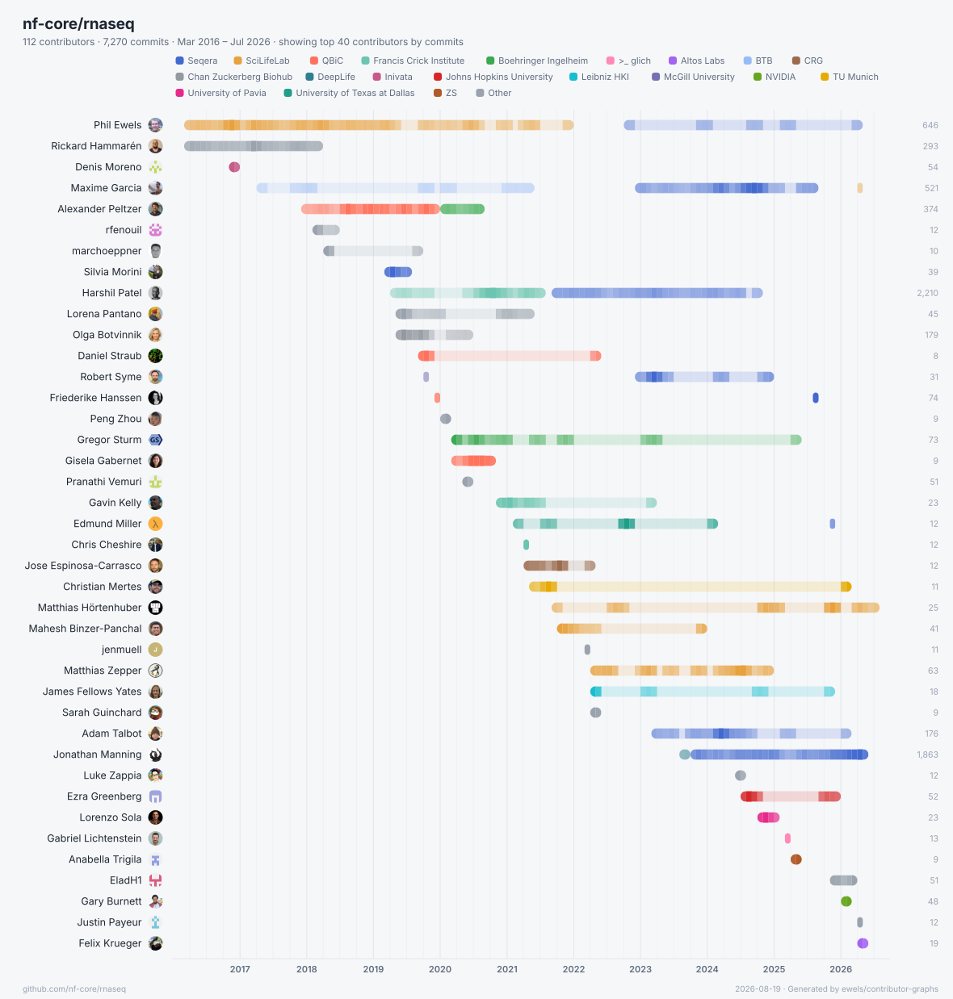
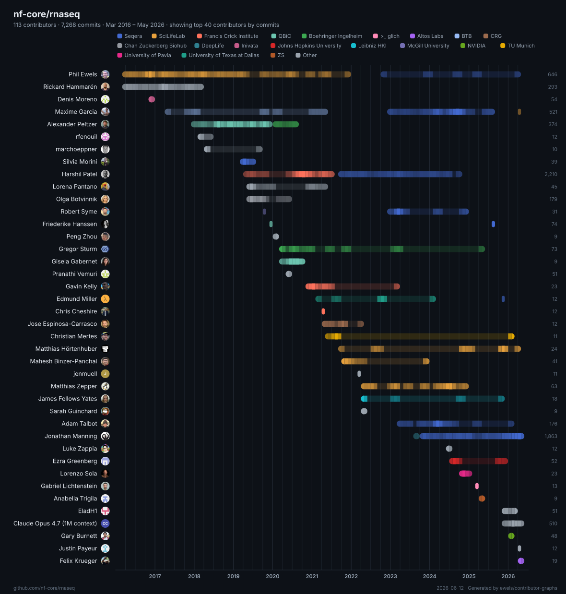
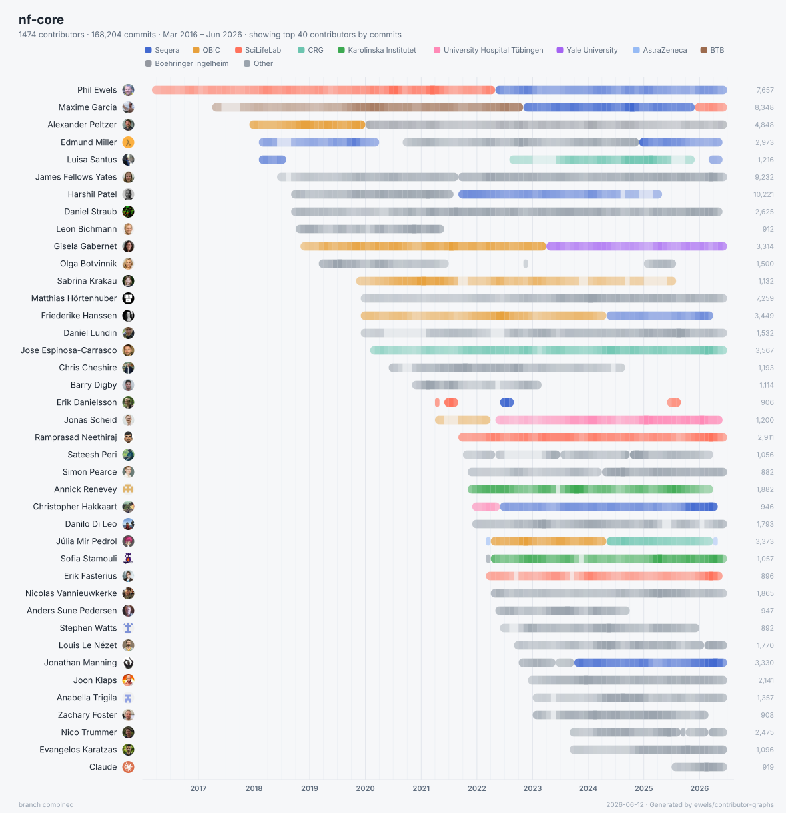
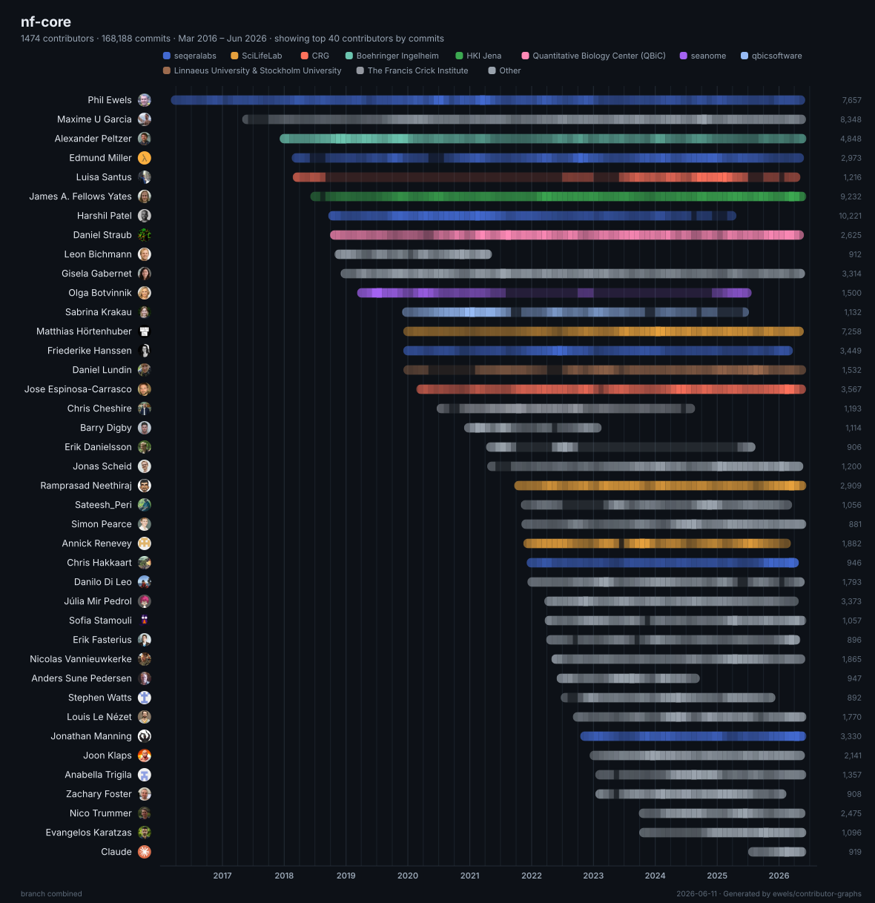
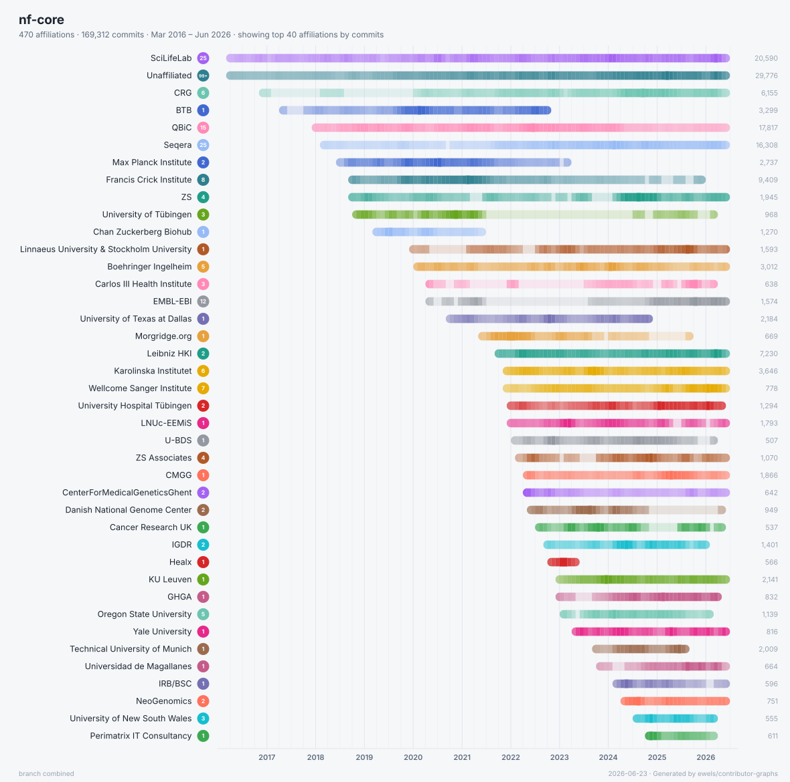
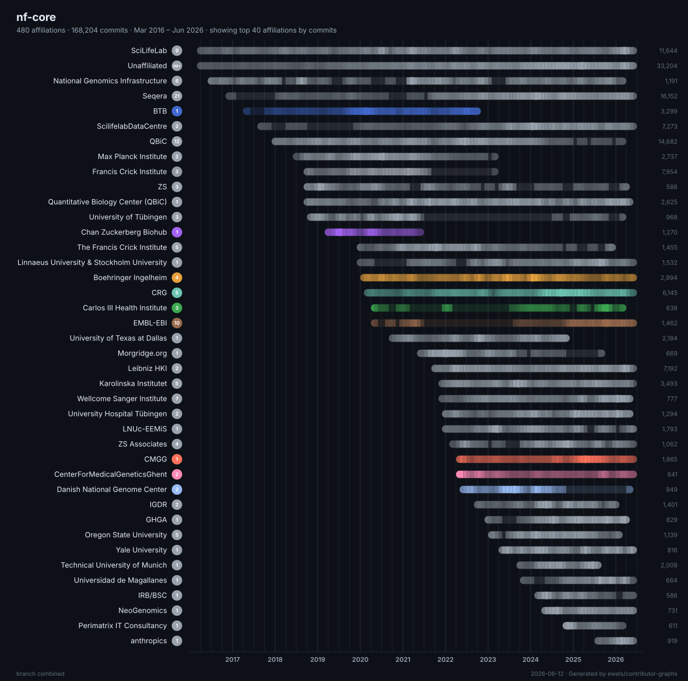
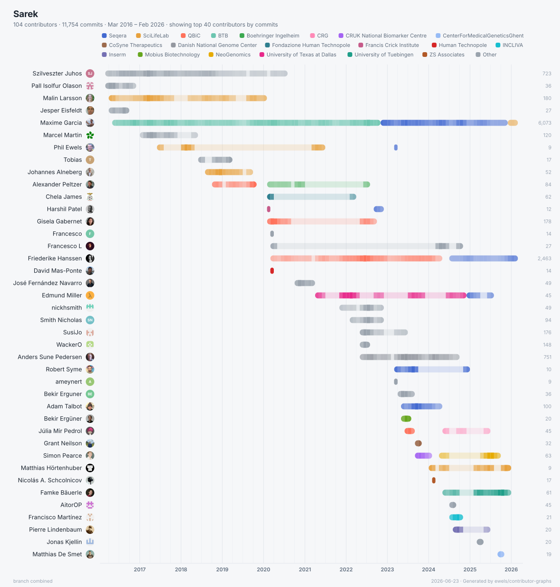
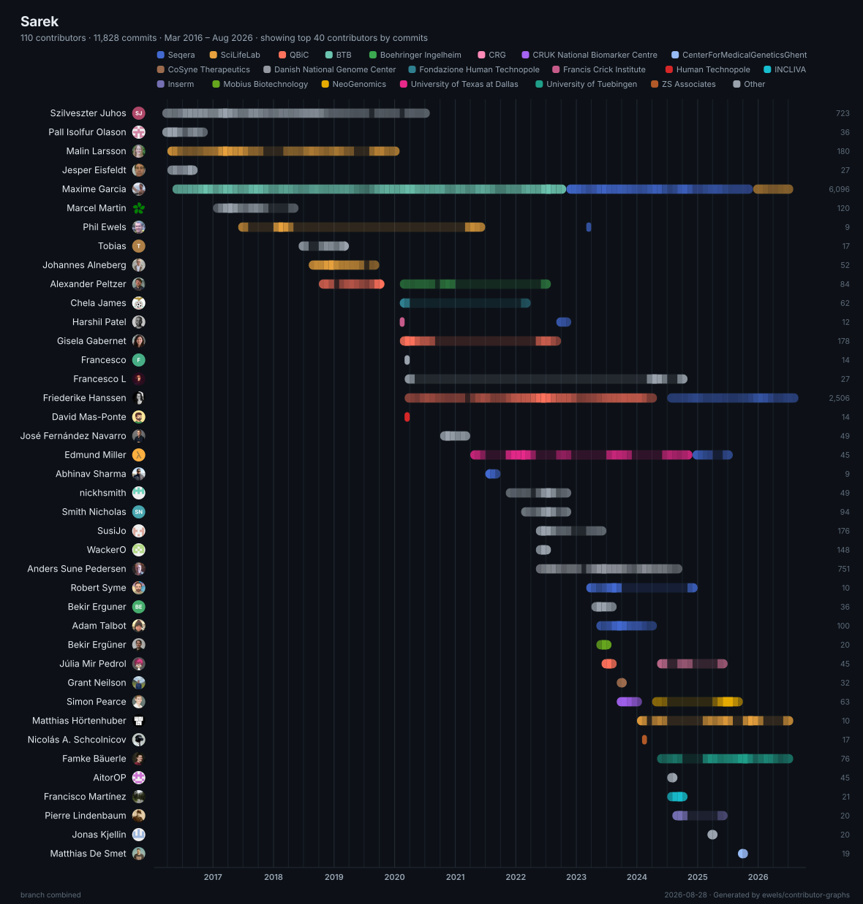
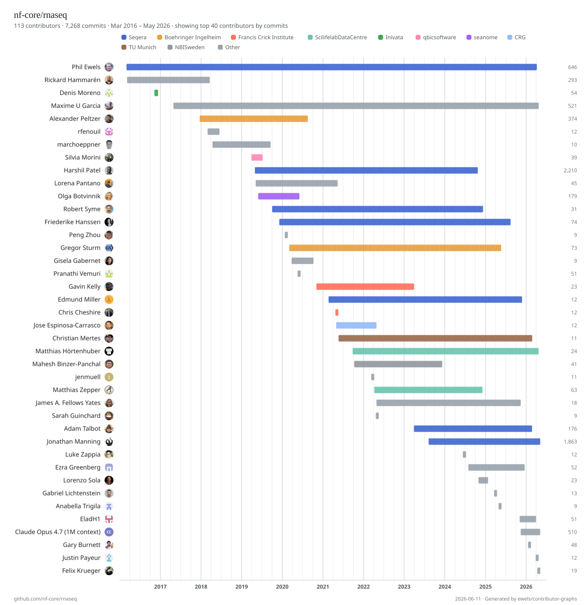

Features
What it gives you.
One command reads the git history, merges scattered identities, enriches them from GitHub, and draws the result two ways. No server, no build step, no runtime.
Two files per run
A vector .svg you can cite, and an interactive
.html page from the same data.
Activity timeline
Months across the top, contributors down the side, each cell shaded by that month's commit count.
Identity merging
Folds one person's many names and email addresses back into a single contributor.
GitHub enrichment
Resolves usernames, avatars and company from GitHub in parallel, even from old or noreply emails.
Affiliation grouping
Colour rows by organisation, or collapse to one row per company
with --by-affiliation.
Interactive page
Search, sort, set a commit threshold, brush-zoom a date range, read details on hover, export a PNG. On mobile the controls tuck into a menu while the timeline stays pinned.
Many repos, one timeline
Point it at one repo, a handful, or every repo in an org, even across several orgs. They pool into a single chart, with commits shared by overlapping histories deduplicated by SHA.
One binary
Rust with no runtime to install, and it finds your
gh token automatically. The HTML it writes inlines
its avatars, so it opens offline or on gh-pages.
Shareable views
Filters live in the URL, so a zoomed-in, filtered chart is a link you can send.
Examples
See it on real repos.
Every page below is a single self-contained HTML file generated by the tool. Open one and try the filters, the affiliation toggle, and the brush-zoom for yourself.


nf-core/rnaseq
per personThe flagship example: every contributor to a busy bioinformatics pipeline, shaded month by month.
Open interactive

the whole nf-core org
entire orgEvery non-fork repo in the org pooled into one timeline: hundreds of repositories, deduplicated into a single chart. Flip the affiliation toggle to group by company.
Open interactive

nf-core by organisation
by affiliationThe same whole-org pool collapsed to one row per company, so the organisations behind the project are the story.
Open interactive

nf-core/sarek
multi-repoHistory stitched across two repositories, so the project's pre-migration past shows up in one continuous timeline.
Open interactive
the Wikipedia theme
themingThe same rnaseq data in a different skin. Themes are data-driven, so the look travels into both outputs.
Open interactiveInstall
Get the binary.
Install with Cargo, grab a prebuilt binary, or run it through Docker. The GitHub CLI is optional but worth having: it's how the tool finds a token for username and avatar lookups without hitting the anonymous rate limit.
In CI, the GITHUB_TOKEN that Actions injects is
picked up automatically, with nothing else to configure.
Prebuilt binaries for every platform are on the releases page.
# install from crates.io cargo install contributor-graphs # run it (a local path, owner/repo, git URL, or org name) contributor-graphs owner/repo
# latest release, picks your platform, no toolchain needed VERSION=v1.3.0 case "$(uname -sm)" in "Darwin arm64") TARGET=aarch64-apple-darwin ;; "Darwin x86_64") TARGET=x86_64-apple-darwin ;; "Linux aarch64") TARGET=aarch64-unknown-linux-gnu ;; "Linux x86_64") TARGET=x86_64-unknown-linux-gnu ;; esac curl -L https://github.com/ewels/contributor-graphs/releases/download/$VERSION/contributor-graphs-$VERSION-$TARGET.tar.gz | tar -xz # run it ./contributor-graphs owner/repo
# writes into the mounted dir; passes your token through docker run --rm -v "$PWD:/work" -e GITHUB_TOKEN \ ghcr.io/ewels/contributor-graphs owner/repo
Usage
Point it at your repos.
Pass as many sources as you like. Each argument is a local path,
a GitHub owner/repo slug, a git URL, or a bare
owner (org or user) that expands to all of its
repos. Mix and match any number of repos and whole orgs in one
command; their histories are pooled into a single timeline and
commits shared across them are deduplicated by SHA.
Everything is cached under
~/.cache/contributor-graphs: the clones, the parsed
history, and the GitHub lookups. On a re-run a quick
git ls-remote checks each repo's tip, so anything
unchanged skips the fetch, the log parse, and the API calls
entirely. A whole org that took minutes the first time redraws
in seconds. Pass --refresh to pull everything
fresh.
$ contributor-graphs
nf-core/rnaseq
Clone the history, enrich from GitHub, write
nf-core-rnaseq.svg and .html.
$ contributor-graphs nf-core
seqeralabs
Pool every non-fork repo across both orgs into one timeline,
with shared commits deduplicated by SHA.
$ contributor-graphs . --open
Use the current checkout and open the interactive page when
it's done.
$ contributor-graphs MultiQC/MultiQC
--min-commits 10 --sort commits
Trim the long tail of one-off contributors and order by who
committed most.
$ contributor-graphs nf-core/rnaseq
--by-affiliation
Collapse the chart to one row per organisation instead of per
person.
Common flags
| Flag | What it does |
|---|---|
| -o, --output-dir | Where to write the two files. Defaults to the cwd. |
| --min-commits | Hide contributors below this many commits. |
| --max-contributors | Cap the static chart to the top N (default 40). |
| --by-affiliation | One row per organisation instead of per person. |
| --exclude-repo |
Skip a repo when expanding an org, by
owner/repo or bare name (repeatable).
|
| --sort |
first · last ·
commits · duration ·
name
|
| --include-bots | Keep bot accounts, dropped by default. |
| --no-co-authors |
Don't credit Co-authored-by trailers
(counted by default; also a live toggle in the page).
|
| --config | YAML curation file: identities, group aliases, and time-bounded affiliations. |
| --affiliations |
CSV/TSV affiliations: one row per period, columns
username, full name,
affiliation, start,
end.
|
| --since / --until | Restrict to a window of commit history. |
| --no-github | Skip all network calls; render from git alone. |
| --refresh | Ignore the cache and pull history and GitHub data fresh. |
Run --help for the full list.
Affiliations
Group people by where they work.
The tool reads each contributor's company from their GitHub
profile and uses it to colour the chart by organisation. Spelling
variants get folded together, so seqeralabs,
Seqera Labs and Seqera all become one
group, and the most common organisations get distinct colours while
the long tail shares a neutral grey.
When the organisations are the story rather than the individuals,
--by-affiliation merges everyone from each one into a
single bar (in the interactive page it's a live toggle, so try it on
the
whole-org example).
For manual control, pass a YAML curation file with
--config. It carries three optional sections:
identities (merge a person's names, emails, and logins),
aliases (group-name variants that mean the same org), and
affiliations (who was where, and when). Anything you write
here is authoritative and is never folded away by the
auto-detection.
# curation.yml identities: - [Phil Ewels, ewels] aliases: Seqera: [Seqera Labs, seqeralabs] affiliations: ewels: - { group: SciLifeLab, until: "2022-05" } - { group: Seqera, since: "2022-05" }
$ contributor-graphs nf-core/rnaseq --config curation.yml
Repeat the periods under a matcher to give one person several
affiliations over time (dates are YYYY,
YYYY-MM, or YYYY-MM-DD;
until is exclusive, overlaps resolve to the later
since). Their row is then drawn as one bar per period,
coloured by the organisation active at the time, and the
by-affiliation view splits their commits across those orgs by date.
Prefer a spreadsheet? Pass a CSV or TSV file with
--affiliations instead (the delimiter is
auto-detected), with columns username,
full name, affiliation,
start, end, and a row per period. The
full name is optional, but when set it wins over
the auto-detected name. Use it on its own or alongside
--config (aliases stay in the YAML).
# affiliations.csv username,full name,affiliation,start,end ewels,Phil Ewels,SciLifeLab,2014,2022-05 ewels,Phil Ewels,Seqera,2022-05 maxulysse,,Seqera,2022-11,2025-12
$ contributor-graphs nf-core/rnaseq --affiliations affiliations.csv
How it works
What happens on each run.
-
Read the history.
git loggives every commit's author, email and timestamp, honouring.mailmap. - Merge identities. Commits are clustered by shared email, then by shared name: one person under five addresses, folded back together.
- Ask GitHub. Each identity is resolved to a username, avatar and profile in parallel, so a noreply email still finds the right account.
- Bin and draw. Commits are counted per month per person, then rendered to a self-contained SVG and an interactive HTML page.